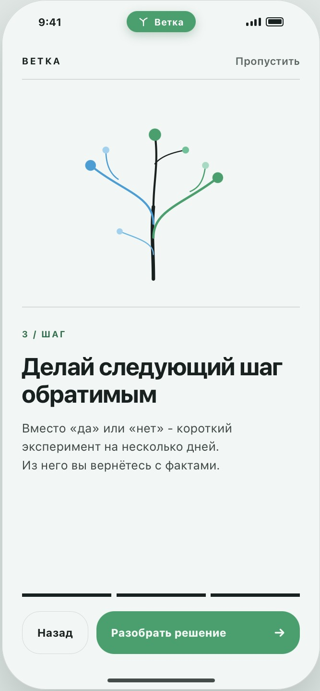
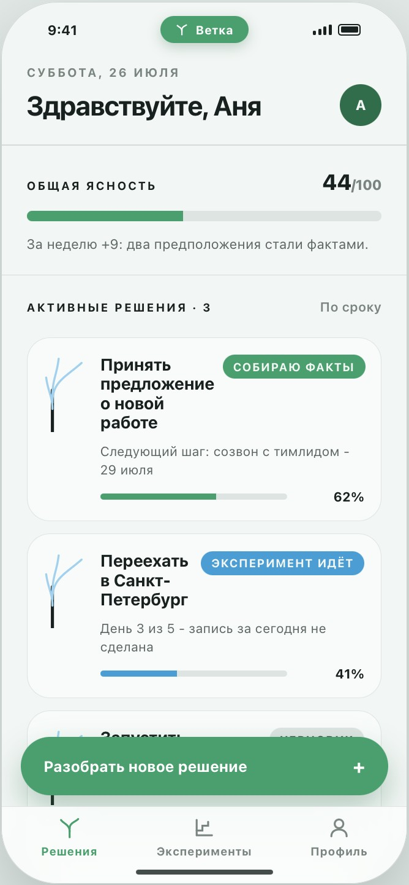
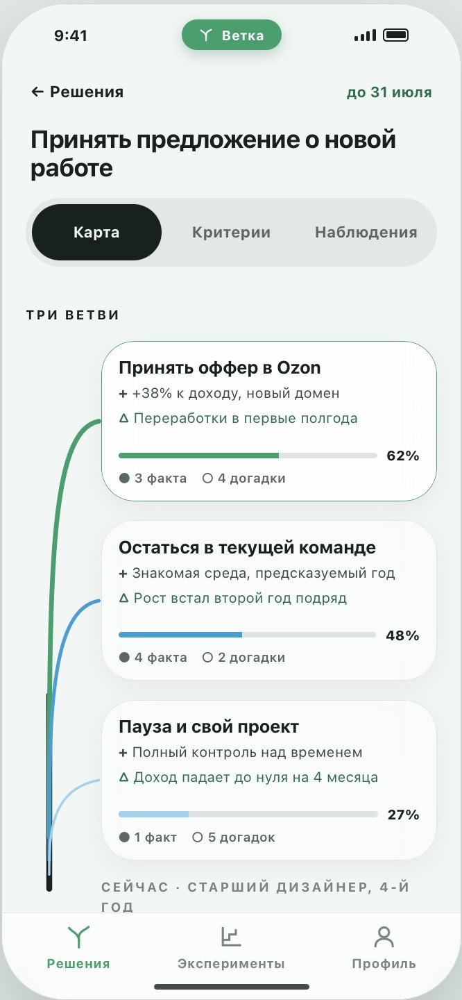
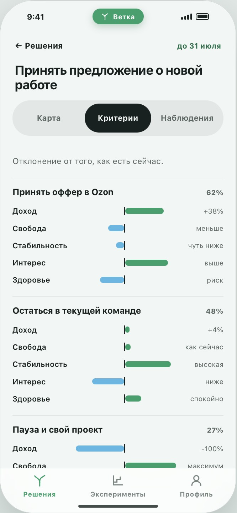
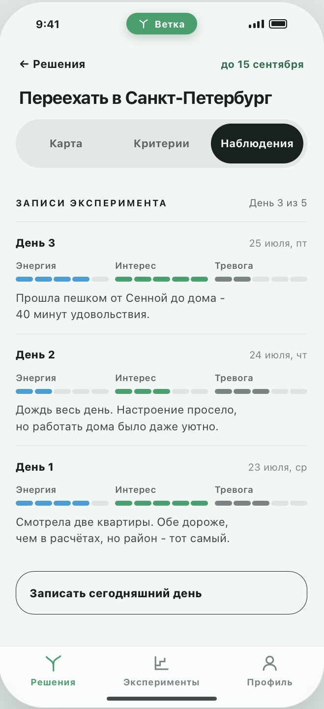
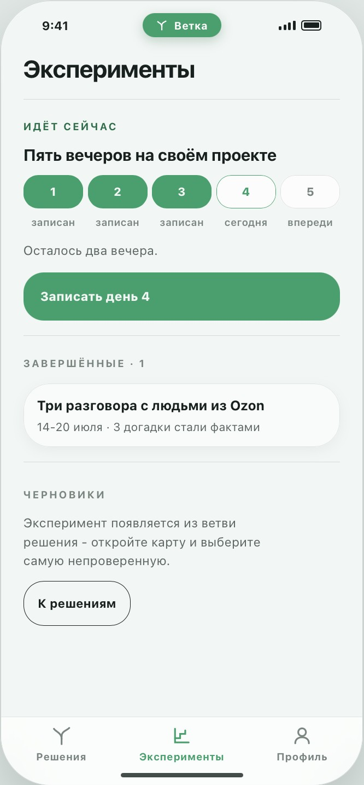
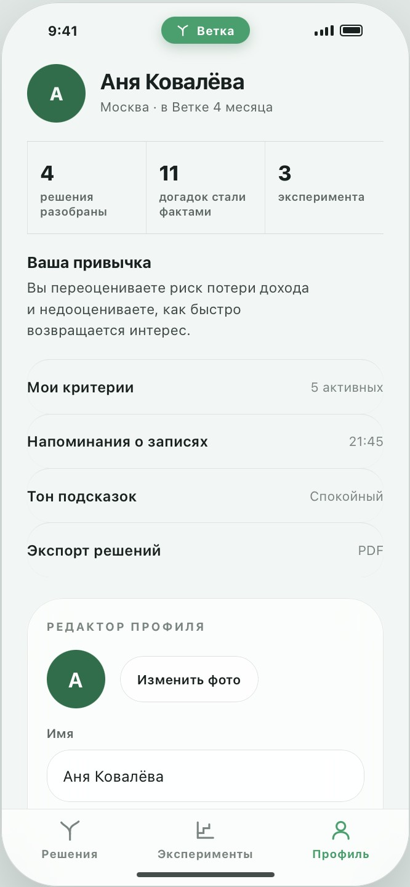

Ветка.
Не угадывай – проверяй. Приложение превращает большое решение в короткие обратимые эксперименты.
Ветка растёт вместе с решением.
На онбординге ветка дорисовывается по мере прохождения: вариант раскладывается на факты, страхи и догадки, а из него вырастает следующий обратимый шаг.







Реальные экраны прототипа: онбординг, ясность, карта ветвей, критерии, записи эксперимента, список экспериментов и профиль.
Не угадывай – проверяй. Каждый вариант раскладывается на факты, страхи и непроверенные догадки.
Проверенного обычно меньше, чем кажется. Ветка помогает добыть настоящие данные о вариантах – маленькими шагами.
Исследование.
5 пользователей · прототип и разговорДал прототип и задачу «разбери своё реальное решение», а после – разговор.
Смотрел, где буксуют и что проговаривают вслух, и спрашивал, стало ли легче двигаться к решению.
из 5 сказали, что решать стало проще
Ствол: как есть сейчас
Точка отсчёта, от неё считается отклонение каждого варианта.
Ветви: варианты
Хватает двух, третий появляется сам. У каждой ветви: выгода, риск и уверенность.
Уверенность: факты против догадок
Процент растёт, когда догадки становятся фактами, а не когда просто думаешь дольше.
Карта решения крупным планом: три ветви, у каждой – проценты уверенности и счётчик «факты / догадки»
Вместо «да» или «нет» – короткий эксперимент на несколько дней. Из него возвращаешься с фактами.
Каждый вечер – короткий чек-ин: энергия, интерес, тревога и заметка. За пять вечеров уверенность выросла с 27% до 44%.
Три догадки стали фактами, одна отпала. Пример из прототипа на демонстрационных данных.
Интерактивный прототип на 30 экранов: переходы, шаги, чек-ин и настройка эксперимента работают.
Концепт без реального заказчика. Числа на экранах – демонстрационные, кроме результата теста (4 из 5). Дальше: расширить выборку и проверить удержание на реальных решениях.